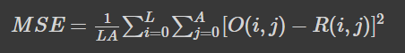
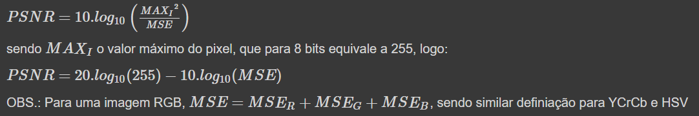
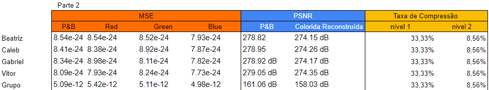

Atividade 3
Atividade 3
Codificação de Imagem por DWT :
Nessa parte do relatório, exibimos as imagens que foram codificadas pela transformada DWT no Colab.
Para a realização dessa parte do laboratório, seguimos os procedimentos descritos no Colab, os códigos podem ser acessados através do link:
https://colab.research.google.com/drive/1gfLH1pNJMqEa77MMOJEUwMoY38vSsQq5?authuser=2
As fotos mostram os integrantes Beatriz, Caleb, Gabriel e Vitor, respectivamente e por fim a foto do grupo inteiro.
Imagens de Codificação de Luminância (P&B) com DWT:
Primeiramente a imagem original foi importada do drive, depois a imagem colorida foi convertida para crominância , em seguida para os coeficientes do primeiro nível da DWT foi usado o tipo haar, o modo dos filtros como “periodization”, posteriormente os coeficientes foram separados para a montagem do primeiro nível da IDWT.
Foi feito uma restrição de figura pequena (10,10), assim como o subplot e os plots dos coeficientes (aproximação, bordas verticais, horizontais e diagonais) que são todos cinzas.
Análise de resultados: As matrizes foram obtidas, a primeira sendo passa baixa, passa baixa (aproximação) a segunda sendo passa alta, passa baixa (bordas verticais), a terceira sendo passa baixa, passa alta (bordas horizontais) e a quarta sendo passa alta, passa alta (bordas diagonais).
A imagem de aproximação em preto e branco foi a com melhor visualização e as demais cinzas, com pouca visualização, sendo a diagonal a pior.
 com DWT.png)
 com DWT.png)
 com DWT.png)
 com DWT.png)
Cálculo do Erro Quadrático Médio (MSE) e da Relação Sinal Ruído de Pico (PSNR)
A MSE é obtida somando-se o erro quadrático de reconstrução pixel a pixel entre a Imagem Original (O) da Reconstruída (R) e normalizando pela dimensão (LxA) da imagem:

A SNR de pico (PSNR) é definida para cada plano componente da imagem como:

Primeiro é feito o shape com a imagem, em seguida é feito a diferença entre a imagem original e reconstruída, depois as equações da MSE e SNR são usadas para o cálculo, para em seguida ser feito o plot da imagem.
Análise de resultados: A primeira foto é a original preto e branco e a segunda é a imagem reconstruída com luminância que ficou com uma resolução muito boa, bem próxima da qualidade da original
 e da Relação Sinal Ruído de Pico (PSNR).png)
 e da Relação Sinal Ruído de Pico (PSNR).png)
 e da Relação Sinal Ruído de Pico (PSNR).png)
 e da Relação Sinal Ruído de Pico (PSNR).png)
Imagens do Teste das Funções de Multiresolução wavedec2() e waverec2()
Primeiramente a wavedec lê a imagem, o tipo da wavedec que foi usado como haar, o modo dos filtros que foi usado “symetric” e o nível de análise que é de 2 níveis.
A reconstrução é feita com o waverec, lendo a matriz anterior, o tipo da waverec que foi usado como haar e o modo dos filtros que foi usado “symetric”.
Em seguida é feito a extração dos coeficientes de cada nível, o coeficiente de aproximação de nível 2 é a Ca2 que é chamada de C[0}, depois é feita a extração de todos os detalhes do nível 1 e colocadas em uma matriz C[1], a mesma coisa é feita para os detalhes do nível 2 que são colocadas em uma matriz C[2]
Depois a imagem original é lida e se plotam os coeficientes do nível 2, assim como a imagem original e a de reconstrução.
Análise de resultados: A primeira foto é a original preto e branco, seguida da foto reconstruída, seguida das iamgens das componentes aproximação 2 (que tem uma qualidade boa), vertical 2 e horizontal 2, que apresentam baixa visualização, sendo possível ver o contorno do corpo em cinza e a diagonal 2 que não é possível visualizar quase nada.

 e waverec2().png)

 e waverec2().png)

 e waverec2().png)

 e waverec2().png)
Imagens da "Montagem" com wavedec2() e wavedecn():
No 1º Nível, monta-se a matriz das matrizes, copiando seus elementos
No 2º Nível a mesma coisa, monta-se a matriz das matrizes, copiando seus elementos, a matriz final completa é chamada de CA1 e CC, após isso a figura é plotada.
Análise de resultados: A primeira imagem é a CA2 (aproximação), já as quatro componentes juntas (aproximação, vertical, horizontal e diagonal) dão a CA1 e todas juntas compõe a CC, a única visível é a CA2, com uma leve visualização da vertical e horizontal, as demais ficam bem escuras e uma das causas é o contraste do próprio pthyon. A imagem do aluno Caleb apresentou um erro de processamento e não foi possível de ser gerada, acreditamos ser por uma questão de baixa qualidade da imagem se comparada com as dos demais integrantes do grupo.


Reconstrução de Imagem Colorida
imagem original é lida e depois codificada por planos de cor, começando pelo plano vermelho.
O coeficiente se dá primeiramente lendo a imagem, as configurações se seguem com o plano 0 (vermelho) definido com o tipo haar e o modo de filtros “periodization”, depois, separa-se os coeficientes cH, cV e cD para formar a IDWT. Em seguida é feito o plot da imagem com seus coeficientes de aproximação, bordas verticais, horizontais e diagonais, para que possa ser feito o plot da imagem reconstruída. As mesmas coisas são repetidas nos planos Verde e Azul, com a diferença que o plano 1 é o Verde e o plano 2 é o Azul e os parâmetros mudam de acordo com a sua determinada cor.
Análise de resultados: A primeira imagem é no plano azul, seguida da imagem no plano verde e vermelho (cada plano com suas componentes separadas: aproximação, vertical, horizontal e diagonal), por fim temos a a imagem reconstruída DWT IDWT que teve suas cores perdiadas sendo possível visualizar apenas traços mais azulados.A imagem do aluno Caleb apresentou um erro de processamento e não foi possível de ser gerada, acreditamos ser por uma questão de baixa qualidade da imagem se comparada com as dos demais integrantes do grupo.


Reconstrução da Imagem colorida e Cálculo da MSE de cada plano de cor e da PSNR total
Primeiro os planos 0 (vermelho), 1 (verde) e 2 (azul), foram copiados para uma nova matriz, em que cada componente (R, B e G), recebeu a sua cor respectiva.
Para o cálculo da MSE foi usado o erro quadrático médio em cada plano e para o cálculo da SNR de pico (PSNR) foi usada a expressão logarítmica descrita .
Em seguida a imagem reconstruída com PSNR total foi plotada.
Análise de resultados: As imagens apresentaram tons diferentes para cada aluno, sendo em um mais predominantes traços vermelhos, em nos demais traços mais azulados. A imagem do aluno Caleb apresentou um erro de processamento e não foi possível de ser gerada, acreditamos ser por uma questão de baixa qualidade da imagem se comparada com as dos demais integrantes do grupo.


Reconstrução Cr Cb :
Explicação.
Análise de resultados:
Tabela de MSE, SNR e Taxa de Compressão
Abaixo apresentamos a tabela com os valores capturados da MSE, SNR e as respectivas taxas de compressão para as imagens utilizadas no relatório
Análise de resultados: Pode-se perceber que as imagens dos integrantes tiveram resultados muito similares entre si, até mesmo na escala RGB separada. Os resultados mais destoantes são aqueles pertencentes à imagem do grupo. Acreditamos que a discrepância de valores seja em função da foto do grupo completo apresentar mais tonalidades e, consequentemente, mais informação do que nas fotos individuais.
